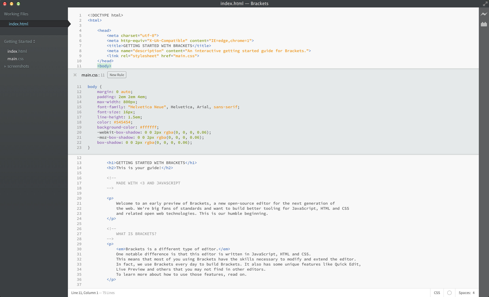

Welkom bij een vroeg voorbeeld van Brackets, een nieuwe open-source editor voor de volgende generatie van het web. Wij zijn erg fan van de standaarden en willen een betere tool bouwen voor het bewerken van JavaScript, HTML en CSS en andere gerelateerde open web technologieën. Dit is ons bescheiden begin.
Brackets is een ander soort editor. Een opmerkelijk verschil is dat deze editor is geschreven in JavaScript, HTML en CSS. Dit betekent dat de meesten van jullie beschikken over de vaardigheden die nodig zijn om Brackets aan te passen en uit te breiden. Eigenlijk gebruiken we Brackets elke dag om Brackets te bouwen. Brackets heeft ook een paar unieke functies zoals Quick Edit, Live preview en nog meer, welke je niet kunt terugvinden in andere editors. Voor meer informatie over hoe u deze functies kunt gebruiken kunt u hier verder lezen.
Nooit meer schakelen tussen documenten en verliezen van je koppeling. Bij het bewerken van HTML, kun je gebruik maken van de Cmd/Ctrl + E sneltoets om snel de gekoppelde CSS code te laten zien. Maak een verandering in je CSS, druk op ESC en je bent weer terug bij het bewerken van de HTML, of laat de CSS code open en ze maken deel uit van de HTML-editor. Als je drukt op ESC buiten de inline editor, zullen ze allemaal uitvouwen.
Wil je het in actie zien? Plaats je cursor op de tag en druk op Cmd/Ctrl + E. Je ziet dan een snelle CSS editor verschijnen hierboven, wat de CSS regels laat zien wat er aan gekoppeld is. Quick Edit werkt in zowel class en id attributen. Je kan nieuwe regels maken via dezelfde manier. Klik in een van de tags hierboven en druk op Cmd/Ctrl + E. Er zijn nu geen regels voor, maar je kunt klikken op de "Nieuwe regel"" knop om een nieuwe regel toe te voegen voor Je kunt dezelfde sneltoets gebruiken om andere dingen te bewerken--zoals functies in JavaScript, kleuren, en animatie timing functies--en we voegen meer en functies meer toe. Nu kunnen inline editors niet genesteld worden, dus kun je alleen Quick Editor gebruiken wanneer de cursor in een "volledige grootte" editor staat.
Wist je nog die "opslaan en herlaad dans" die we jaren lang hebben gedaan? Dat je het bestand die je hebt gewijzigd in een editor moest opslaan, naar de browser moest omschakelen en dan herladen om het resultaat te kunnen zien. Met Brackets is dat allemaal verleden tijd.
Brackets opent een live connectie in je locale browser en elke keer wanneer er HTML en CSS updates zijn, werkt het automatisch bij terwijl je typt! Misschien heb je zoiets al gebruikt met browser-gebaseerde tools, maar met Brackets is het niet nodig om helemaal terug te gaan naar de editor en de code uiteindelijk te kopiëeren en te plakken. Je code wordt uitgevoerd in de browser, terwijl je blijft in de editor!
Brackets maakt het makkelijk om te zien hoe wijzigingen in je HTML en CSS de pagina zullen beïnvloeden. Wanneer je je cursor op een CSS-regel zet, zal Brackets alle betrokken elementen in de browser markeren. Ook wanneer je op dat moment een HTML-bestand aan het bewerken bent, zal Brackets de bijbehorende HTML-elementen in de browser markeren.
Als je Google Chrome hebt geïnstalleerd, kunt u deze functie zelf uitproberen. Klik op het icoontje met de bliksemschicht rechtsboven in Brackets of druk op Cmd/Ctrl + Alt + P. Wanneer Live Voorbeeld is ingeschakeld op een HTML-document kunnen ook alle gekoppelde CSS-documenten worden bewerkt. Het icoontje verandert van grijs naar goud als Brackets verbinding heeft met de browser. Hierna plaats je je cursor op de tag hierboven. Let op de blauwe markering die verschijnt rond het beeld in Chrome. Vervolgens drukt u op Cmd/Ctrl + E om de gedefinieerde CSS-regels te laten zien. Probeer de grootte van de rand te veranderen van 10px naar 20px of verander de achtergrondkleur van "transparent" naar "hotpink". Als je Brackets en je browser naast elkaar hebt weergegeven, zie je dat de wijzigingen meteen worden weergegeven in zowel de browser als in Brackets. Cool toch?Vandaag de dag ondersteunt Brackets alleen Live Preview voor HTML en CSS. We zijn momenteel bezig met een Live Preview ondersteuning voor JavaScript. Live-previews zijn ook alleen mogelijk met Google Chrome, maar we hopen dat deze functionaliteit in de toekomst voor alle belangrijke browsers beschikbaar is.
Voor iedereen die de waardes voor HEX en RGB nooit geleerd hebben, heeft Brackets iets om snel en eenvoudig een bepaalde kleur te laten zien. Voor zowel CSS of HTML werkt het als volgt: je zet gewoon je cursor op een kleurwaarde of gradiënt en Brackets geeft een voorbeeld van de kleur. Hetzelfde geldt voor afbeeldingen: je zet je cursor op een link die naar een afbeelding leidt en Brackets laat een thumbnail zien van dat beeld.
To try out Quick View for yourself, place your cursor on the tag at the top of this document and press Cmd/Ctrl + E to open a CSS quick editor. Now simply hover over any of the color values within the CSS. You can also see it in action on gradients by opening a CSS quick editor on the tag and hovering over any of the background image values. To try out the image preview, place your cursor over the screenshot image included earlier in this document. Om Quick View uit te proberen voor jezelf, plaats je je cursor op de tag bovenaan dit document en druk op Cmd/Ctrl + E om de Quick Editor voor CSS te openen. Ga nu met de muis over een kleurwaarde heen en je ziet de kleur. Je kunt met deze functie ook gradiënts zien door met de cursor op de tag te staan en met de cursor over een van de afbeeldingskoppelingen te gaan. Om dit uit te proberen, plaats je muis over de afbeelding van het screenshot in dit document.Naast al deze functies die zijn ingebouwd in Brackets, heeft onze grote en groeiende gemeenschap van extensie-ontwikkelaars meer dan honderd extensies gebouwd die nuttige functionaliteiten toevoegen. Mis je iets wat Brackets niet aanbiedt? Dan heeft waarschijnlijk iemand het al gebouwd in een extensie. Om te bladeren of de lijst met extensies te zoeken, ga naar Bestand > Uitbreidingbeheer en klik op de "Beschikbaar" tab. Als je een extensie vindt die je wil, klik je gewoon op de "Installeer" knop.
Om je eigen code te bewerken met Brackets, kun je gewoon een map openen met je bestanden. Brackets behandelt de geopende map als een "project"; met functies zoals Code Hints, Live Voorbeelden en Quick Edit gebruiken alleen de bestanden in de geopende map.
Zodra u klaar bent om dit voorbeeldproject te bewerken en uw eigen code toe te voegen, kunt u de dropdown gebruiken in de linker zijbalk. Op dit moment is er automatisch gekozen voor de map "Aan de slag" - dat is de map met het bestand waar je nu in bezig bent. Klik op de dropdown en kies "Open map..." om uw eigen map te openen. Je kunt de dropdown later ook gebruiken om terug te schakelen naar de mappen die je eerder hebt geopend, inclusief dit voorbeeldproject.Brackets is een open-source project. Web ontwikkelaars over de hele wereld dragen bij om samen een betere code-editor te bouwen. Veel meer extensies die mogelijkheden van Brackets uitbreiden. Laat ons weten wat je denkt, geef ons uw ideeën of draag direct bij aan het project.